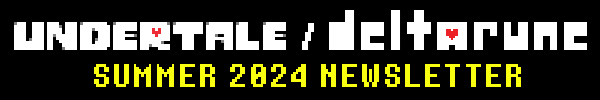
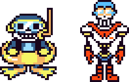
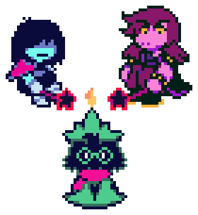
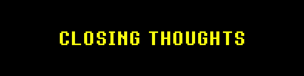
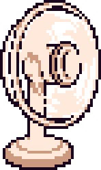

 |
|
Hi everyone! DELTARUNE Chapter 4 is making great overall progress. |
As the time of writing this (7-23-24)... |
All the maps are done. |
All battles are playable. |
Only 2 cutscenes need small improvements. |
One battle needs to be balanced and the visuals need to be completed. |
One battle needs a better background. |
Two battles are having their ending sequences improved. |
There's still some things to fix and places to polish. |
Three of my friends were able to play through the entirety of the unfinished Chapter 4. |
All of them liked it and didn't have any major criticisms. Phew! (Except for one friend, who kept mentioning that I should name all of the chairs because the existence of "Chairiel" implies that all the other chairs should have names as well... I'm probably not going to do that...) |
I'm not sure if Chapter 2 is still the longest chapter, but Chapter 3 & 4 together are definitely longer than Chapter 1 & 2 combined. Thinking about that is kind of crazy… |
Initial development of Chapter 5 is also progressing steadily. Most of the team is still focusing on Chapter 4, but a few people are going ahead and creating an initial draft of Chapter 5's maps, working on bullet patterns, etc. |
 |

|
Chapter 4 is basically playable minus some polish!! So, it must seem like Chapter 3&4 are going to come out really soon, right!? |
... |
Actually, the release is still far away!!! We've gotten 3 months closer, but it's still far!!! |
Why!? How does that horrible, despair-inducing, teeth-gnashing-fact that keeps me up at night, make any sense at all!? I want them out NOW!!! |
Well… I'll tell you! |
|


That's right!!! CREATING the chapters is only the first step! |
RELEASING the chapters... is a whole other ordeal. |
 |
It wouldn't be such a big deal if the game was free... But since this is going to be our first big paid release since UNDERTALE, we really have to take the extra time to make sure it's perfect! |
Our goal is... simultaneous console and PC release, in both English and Japanese! |
So… what do we have to do? |
Well... It's long, so click below if you're curious!!! |
 |
  |
Thank you guys so much for your patience!! I am monumentally thankful to everyone still waiting while we get over this final hill before the release of 3 & 4! |
With the progress on Chapter 5, I'm feeling confident that once Chapter 3 and 4 come out, the release schedule for the following chapters will be a lot smoother!! It's still going to take a good while to get there, but once we do, you'll never have to wait so long for a Chapter ever again! |
... |
By the way, one more unrelated thing!!! |
It's Hololive again! |
This time, Camellia and I created a song for the legendary pirate, Houshou Marine! |
It's got an amazing music video, so check it out! |
Marine's desire was for us to create a "boss song" about her... A serious, intense song, that doesn't pull any gags at all! As a song reference for this, they sent me... "MEGALOVANIA". |
... Anyway, I tried my best to make something cool. |
Marine's basic concept for the story was about her fighting with a ghost version of herself. Camellia and I actually ended up fleshing out this story concept while writing the song, and it ended up being used as a basis for the video! Some of my creative highlights include, "there's a moment where the two Marines' faces become close in the middle of the battle"... ghost Marine's special attacks... and, the plot twist. |
All right, now it's time to set sail...! |
(I'll try to give another update in September!) |
|